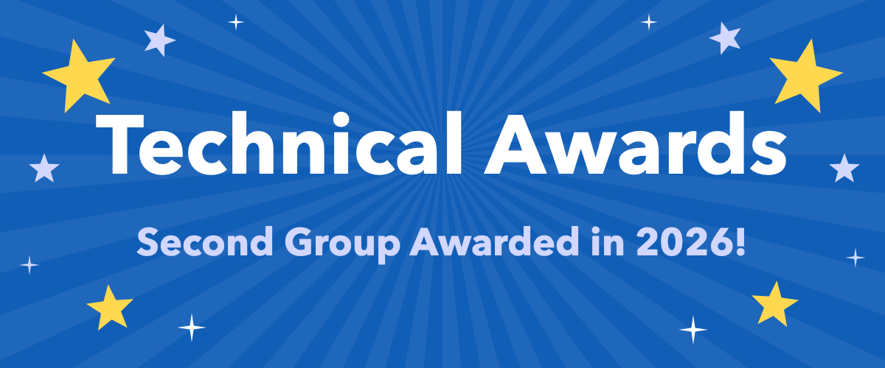

The R Consortium’s Infrastructure Steering Committee (ISC) is pleased to announce the second round of 2026 technical grant recipients. These six projects will receive support to benchmark and speed up the R interpreter, expand translation and census data resources, modernize the R Journal’s publishing infrastructure, bring Kubernetes and batch workflows to R, and deliver GeoArrow-native spatial computation.
The R Consortium ISC grant program funds projects that strengthen the R ecosystem’s technical and social infrastructure. These grants support open source development, tools, and community initiatives that benefit the broader R community. Successful proposals typically show broad impact, focused scope, clear deliverables, and demonstrable value to R users and package developers.
The second 2026 grant cycle reflects the range of work required to keep R useful, modern, and reliable. Some projects focus on core infrastructure, including a representative benchmark suite and performance dashboard for the R interpreter, the publishing workflow behind the R Journal, and a high-performance spatial computation engine. Others expand access and reach, with machine-assisted translation of R help pages and reproducible access to Argentina’s historical census statistics, or connect R to cloud and workflow systems through a Kubernetes client and a batch job framework.
The recipients come from a geographically diverse set of institutions and communities across the Czech Republic, India, Argentina, Australia, Canada, Ireland, and the United States. They include university faculty and researchers, package authors and maintainers, national statistics office staff, journal editors, and independent developers, many of whom are already deeply involved in the R and rOpenSci communities.
Together, these projects demonstrate the continuing importance of targeted funding and support for open source software.
You can browse the complete list of ISC technical grant recipients on the R Consortium funded projects page. Looking to apply for funding? Visit the R Consortium Call for Proposals page for details on future grant opportunities, and follow the R Consortium blog for announcements.
Measuring R Performance: Representative Benchmarks, Performance Dashboard, and Profile-Guided Builds
Leads: Pierre Donat-Bouillud, Assistant Professor, Czech Technical University in Prague (FIT CTU); Matěj Kocourek, Charles University; Filip Křikava, Associate Professor, Czech Technical University in Prague (FIT CTU)
Grant: $4,000
This project will build an authoritative, representative benchmark suite for the R interpreter and use it to deliver profile-guided optimization (PGO) to R. Existing R benchmarks are scattered, often small, and tend to report only a single overall speedup or slowdown. The team’s benchmarks will be actionable: they will show not only how fast each program runs, but also where it spends its time across different regions of the R interpreter.
The team will refine the categories used to classify R operations, collect a large corpus of real-world R code (including CRAN package vignettes, Kaggle notebooks, and GitHub scripts), and use it to check and improve how representative the suite is. They will also create a reusable GitHub Actions workflow and a public performance dashboard, similar to Python’s speed.python.org, for comparing R performance across versions, platforms, and build configurations. The same tooling can be used to benchmark R packages.
Finally, the project will study whether PGO improves the performance of real-world R code and will provide a patch to R Core to enable PGO in R builds. Preliminary experiments have shown speedups of up to 10%.
babelrd: machine-drafted, human-reviewed translations of R help pages
Lead: Aditya Bansal, Indian Institute of Technology Madras; Google Summer of Code 2026 contributor, R Project
Grant: $5,600
rdlocal lets R users read help pages in their own language by installing a translation module, but every translation is still written by hand, and the help text for base R alone runs to roughly a million characters per language. Aditya Bansal will build babelrd, a companion package that lets a translation team machine-draft a shared rdlocal module for a package and language, check that every page still renders correctly, and then have people review the draft.
Plain machine translation can easily break help pages by altering code, link targets, or the placeholders rdlocal uses for live values. babelrd will protect those elements, translate one help page at a time for consistent terminology, and validate the result. Every machine-drafted string will be marked as needing review, and human translations will never be overwritten. A bridge to PO files will allow review in Weblate or any gettext editor.
The project will start with DeepL, then add glossary support and additional translation backends. It will also publish a pilot Spanish draft of the MASS package help pages together with a quality report. The work builds on earlier ISC-funded translation efforts, including rhelpi18n, babeldown, and the Consistent Translations Glossary.
ARcenso: Expanding and Strengthening an R Package for Argentina’s Census Data
Leads: Andrea Gomez Vargas, National Institute of Statistics and Censuses of Argentina (INDEC); rOpenSci; RLadies+; R en Buenos Aires. Emanuel Ciardullo, INDEC; rOpenSci; R en Buenos Aires
Grant: $5,500
ARcenso is an open-source R package, developed through the rOpenSci Champions Program, that provides reproducible access to Argentina’s official census statistics. Historical census results are scattered across printed publications, scanned documents, and spreadsheets whose structure and classifications change from one census round to the next, which makes them hard to access, compare, and reuse.
This project will strengthen the package’s infrastructure, including internal data storage and data types, testing, and documentation, and prepare it for its first CRAN release and publication on R-universe. It will also extend the package’s reproducible, version-controlled processing and validation workflow, incorporating automation such as AI-assisted extraction and GitHub Actions together with automated checks and human review.
Building on that foundation, census coverage will be expanded with the 1960 census and national and subnational data from the 1980 and 1991 censuses, representing roughly 3,500 Excel files of official tables. The work will give statistical offices, researchers, educators, and journalists a more robust way to analyze Argentina’s long-term demographic change, and it offers a model for preserving historical official statistics elsewhere.
Modernising the R Journal Publishing Infrastructure
Lead: Emi Tanaka, Australian National University, with R Journal Executive Editorial Team members Emily Zabor (Case Western Reserve University; Cleveland Clinic Taussig Cancer Institute), Vincent Arel-Bundock (University of Montreal), and Rob Hyndman (Monash University)
Grant: $9,900
The R Journal is an open-access, peer-reviewed, volunteer-run journal owned by the R Foundation, with more than 850 articles published since 2009. Its production workflow remains largely manual, LaTeX submissions have no reliable route to HTML (some articles are available only as PDF), the R Markdown article template lacks the unified cross-referencing and citation support that Quarto provides, and the rj package and distill-based website have accumulated technical debt.
A contracted assistant, supervised by the Executive Editorial Team, will modernize this infrastructure. The project will build a LaTeX-to-HTML workflow around LaTeXML, the software arXiv uses for the same purpose, and package it as a Docker image and browser-based live preview that render an article to HTML and PDF with a readable report of errors and warnings. It will also publish author guidelines for LaTeX aligned with arXiv.
The project will also replace the R Markdown article template in rjtools with a Quarto template that produces both galleys from a single source, simplify rj to work with the new workflow and emit a validated metadata record, and replace the distill website with a searchable Quarto website. Together, these changes will reduce the manual burden on volunteer editors and improve accessibility for readers.
Kubernetes R Client and Batch Framework for R Packages
Lead: Alexandru Mahmoud, University of Limerick; Bioconductor (via NumFOCUS)
Grant: $7,000
R has no Kubernetes client on CRAN, even though most other major languages have had official clients for years. R users must shell out to kubectl or switch to Python, and parallelization frameworks such as BiocParallel, future, and crew cannot easily start workers on Kubernetes. R package maintainers also lack an established way to declare batch jobs from their own packages, so workflow systems such as Galaxy and Nextflow rely on hand-written wrappers that can lag years behind the packages they wrap.
Alexandru Mahmoud will release kube, a dynamic R client for the Kubernetes API, and RBatch, a framework for declaring batch-shaped jobs within R packages and generating Galaxy, Nextflow, WDL, GA4GH TES, HTCondor, and Kubernetes job wrappers from a single declaration. RBatch generalizes the BiocJobs hackathon project, which is already used by a UKRI-funded BioFAIR project.
The project will also provide a job-testing GitHub Action that starts a k3s cluster, submits each declared job with kube, and runs its test, along with a proposal to integrate it into R-universe’s build workflow. The work will be supported by developer and user documentation, a Getting Started guide, and a final report.
Native GeoArrow Computation Engine in R
Lead: Josiah Parry
Grant: $5,000
Spatial analysis in R with sf can struggle to scale, in part because geometries are stored as R lists and must be converted to and from GEOS or S2 geometries for every operation. GeoArrow, an extension of the Apache Arrow standard for representing spatial data in memory, avoids this overhead, but R still lacks a GeoArrow-native computation engine that scales well and has a small footprint.
Josiah Parry will complete geoarrowrs, a Rust-based, GeoArrow-native, parallelized spatial computation engine for R built on extendr. The package has no system dependencies and no runtime downloads. This project will complete the core geometry engine, add persistent R-tree and KD-tree spatial indexes that can also be used to spatially sort geometries, and provide drop-in sf compatibility through mask_sf() along with a CRAN release.
The project will also add enhanced GeoParquet support, including spatial sorting, bounding-box covering columns for predicate pushdown, and persistent coordinate reference systems in PROJJSON so that GeoArrow data moves losslessly between R, Python, DuckDB, and GDAL.
Supporting Open Infrastructure for the R Community
The R Consortium ISC is pleased to support these six projects. Each addresses a concrete need in the R ecosystem: measuring and improving interpreter performance, making documentation and official statistics more accessible, sustaining the infrastructure behind the R Journal, connecting R to modern cloud and workflow systems, and bringing scalable spatial computation to R users.
We will be following the progress of these projects and sharing updates as the grantees deliver new releases, documentation, examples, workshops, and community resources.
A full list of all ISC technical grant recipients is available here. We look forward to seeing your work on the list in the near future!
For future grant opportunities, visit the R Consortium Call for Proposals page and follow the R Consortium blog for announcements.